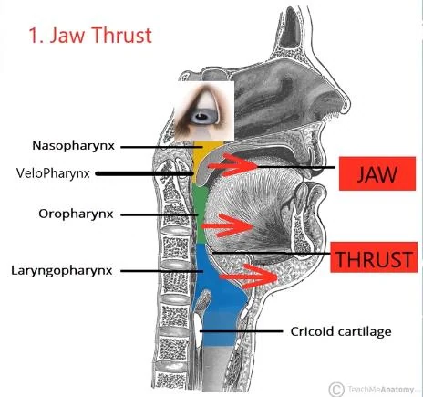

Clinical guideline and diagnosis
Before providing OAT, confirm the medical diagnosis and the agreed treatment pathway. The 2025 AADSM standards emphasise qualified dental assessment and in-person comprehensive examination, impressions and construction-bite records.
The governing document remains the joint AASM and AADSM Clinical Practice Guideline (Ramar et al., "an up‐ date for 2015"), supplemented by the AADSM Dental Sleep Medicine Standards, most recently updated in 2025. The 2015 document was the first official joint guideline of the two academies and is built around the collaborative physician–dentist model.
Diagnosis first
The presence or absence of OSA must be determined before initiating treatment with an appliance, for two reasons: to identify patients at risk from the complications of sleep apnoea, and to provide a baseline against which the effectiveness of subsequent treatment can be established.
Detailed diagnostic criteria for OSA are available and include clinical signs, symptoms and the findings identified by polysomnography.
The severity of sleep-related respiratory problems must be established in order to make an appropriate treatment decision — and severity is predictive of the response to an appliance.
Appliance fitting and who may do it
Oral appliances should be fitted by qualified dental personnel who are trained and experienced in the overall care of oral health, the temporomandibular joint, dental occlusion and associated oral structures.
Dental management of patients with appliances should be overseen by practitioners who have undertaken serious training in sleep medicine and/or sleep-related breathing disorders, with focused emphasis on the proper protocol for diagnosis, treatment and follow-up. The guideline states that the dentist should receive diplomate certification in dental sleep medicine or seek the designation of "qualified dentist".
Although cephalometric evaluation is not always required for a patient who will use an oral appliance, appropriately trained professionals should perform these examinations when they are deemed necessary.
Treatment objectives
| Condition | Treatment objective |
|---|---|
| Primary snoring without features of OSA or upper airway resistance syn-drome | To reduce the snoring to a subjectively acceptable level |
| OSA | Resolution of the clinical signs and symptoms of OSA, and normalisation of the AHI and oxyhaemoglobin saturation |
The recommendations, with their rationale
| Recommendation | Rationale and detail |
|---|---|
| Sleep physicians should prescribe an oral appliance, rather than no treatment, for adults who request treat-ment of primary snoring (without OSA) | Appliances reduce the frequency and intensity of snoring and improve sleep quality and quality of life. But primary snoring must be diagnosed by a sleep physician to avoid misdia-gnosis, and conservative measures — weight loss and other behavioural measures, positional therapy, avoiding alcohol — should be tried first; if these fail, provide an appliance. Note the AADSM 2025 position that in the confirmed absence of OSA, a referral is not required for an appliance to manage snoring and treatment may commence at the qualified dentist's discre-tion |
| Patients with severe OSA should have an initial trial of nasal CPAP | Greater effectiveness has been shown with CPAP than with oral appliances. Upper airway surgery — including tonsillectomy and adenoidectomy, craniofacial operations and tracheo-stomy — may also supersede appliance use in patients for whom these operations are predicted to be highly effective |
| Where an OSA patient is in-tolerant of CPAP or prefers alternative therapy, sleep physicians should prescribe an oral appliance | CPAP remains first-line for OSA because it is better at reducing AHI, arousal index and oxygen desaturation index and at increasing oxygen saturation, and the impact of an appli-ance on blood pressure is limited by comparison (though appliances may reduce blood pressure in selected patients). However, appliances have a greater adherence rate and less discontinuation of therapy due to side effects, and are unlikely to harm the patient — so even though less efficacious, the benefit outweighs the risk. Although not as efficacious as CPAP, appliances are indicated for patients with mild-to-moderate OSA who prefer them to CPAP, or who do not respond to CPAP, are not appropriate candidates for CPAP, or have failed treatment attempts with CPAP or with behavioural measures such as weight loss or sleep-position change |
| Qualified dentists should use a custom, titratable ap-pliance over non-custom oral devices | Custom titratable appliances reduce AHI, arousal index and oxygen desaturation index, and increase oxygen saturation, to a greater extent than non-custom devices. Neither significantly affects sleep architecture or sleep efficiency — but custom appliances improve other physiolo-gical sleep parameters, thereby improving daily function and quality of life, and improve daytime sleepiness to a degree not inferior to CPAP |
| Sleep physicians should conduct follow-up sleep testing to improve or con-firm treatment efficacy | Testing (PSG or attended cardiorespiratory sleep study with the appliance in place) should oc-cur after final adjustments or fitting have been performed. Significant improvement in ap-pliance efficacy occurs when changes are made based on data obtained during or after sleep studies, because subjective feedback alone is not sufficient to determine the optimal setting. Also consider follow-up testing in appliance-treated patients with recurrent symptoms, sub-stantial weight change, or a new diagnosis of a comorbidity relevant to OSA. Follow-up sleep testing is not indicated for patients with primary snoring unless symptoms worsen or fail to resolve |
| Sleep physicians and quali-fied dentists should instruct patients to return for period-ic office visits | Adjustments made by the dentist based on data from polysomnography or home sleep apnoea testing conducted by the sleep physician produce greater long-term improvement in the OSA with fewer side effects. Once optimal fit is obtained and efficacy shown, dental specialist follow-up every 6 months for the first year and at least annually thereafter is re-commended |
| Qualified dentists should provide oversight of appli-ance therapy | To survey for dental-related side effects or occlusal changes and reduce their incidence — most appliance side effects are dental. Intolerance and improper use are potential problems, since appliances require patient effort to use properly; they may aggravate TMJ disease and may cause dental misalignment and discomfort unique to each device; and they can be |
| Recommendation | Rationale and detail |
| rendered ineffective by patient alteration. The purpose of follow-up is to monitor adherence, evaluate device deterioration or maladjustment, evaluate the health of the oral structures and the integrity of the occlusion, and assess the patient for signs and symptoms of worsening OSA. Objective re-evaluation of respiration during sleep is indicated if signs or symptoms of OSA worsen or recur. A specific aim is to reduce the drop-out rate, which is highest in the first year, while appliance use is likely to be lifelong. Close communication with the dental specialist is most conducive to good patient care. Consider also possible allergy to metals or acrylic, strong bruxism, and anatomical deviation |
Selection criteria at the first consultation
| Criterion | Detail |
|---|---|
| BMI | Failure is more likely with a higher BMI, especially ≥35. Better response in patients with mild-to- moderate OSA and lower BMI |
| Dentition | Dental evaluation; generally at least 6 teeth per arch (some sources specify 8–10 sound teeth per arch with adequate bone support). Assess mobility, spacing, curve of Spee and restorative status |
| Nasopharyngeal as-sessment | Nasolaryngoscopy to evaluate the degree of pharyngeal stenosis through the naso-, velo-, oro- and laryngopharynx, with the jaw thrust manoeuvre and the Müller manoeuvre (see below) |
| Protrusive and opening capacity | Protrusion at least 5–8 mm (10–12 mm normal); maximum opening 25–40 mm (40–60 mm nor-mal) |

Figure 5.1 — The four pharyngeal levels and the effect of jaw thrust. Nasopharynx, velopharynx, oropharynx and laryngopharynx, down to the cricoid cartilage, with the direction of the jaw thrust manoeuvre indicated.
Why it is examinable: nasolaryngoscopic assessment is how a candidate demonstrates that appliance selection is anatomically reasoned rather than empirical. Jaw thrust sometimes increases space at only one or two of the four levels — which is exactly the information you want before committing a patient to mandibular advancement. The Müller manoeuvre(the patient inhales while the clinician obstructs the nose, reducing intrapharyngeal pressure) demonstrates which levels collapse, and can be combined with jaw thrust. Note the caution: jaw thrust produces an oblique stretch on the pharyngeal constrictors, increasing wall tension and therefore compliance and collapsibility — so the manoeuvre is not a purely benign predictor.
From the supplied IFDSM Examination Revision Companion, source pp. 75–78. This full content is embedded in the HTML page, not loaded from a PDF or external script.